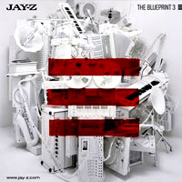
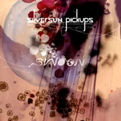
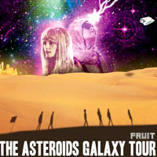
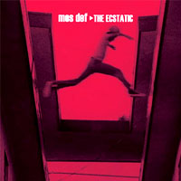
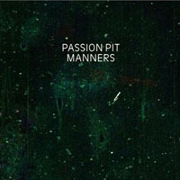

amfm's 20 ALBUMS OF 2009 (6 thru 10)
By: Ciera Mckissick
10. Jay- Z, The BluePrint 3
Jay Z isn't retiring anytime soon, especially when he's at the top of his game. The Blueprint 3 is Jay Z's eleventh album, and it is his eleventh number one album in the United States. Jay Z and Elvis Presley used to hold that title together when Jay only had ten albums, but he has since taken the throne from the King. The album was produced by the best of the best, Jay Z would settle for no less. Kanye West, Timbaland, Swiss Beats, The Neptunes, and more great names are behind the magic of Blueprint 3. This album is the third in the Blueprint trilogy, and is by far some of Jay's best work, despite how commercial it is. As an older and wiser man gaining on 40, Jay Z can still wow people with his ability to make a hot track and even skip the beats, like he does on "Death of Auto-tune," which is backed by horns, drums and guitars alludes to times without auto-tun. "Death of the ringtone/This ain’t for iTunes/This ain’t for sing-along/ This is Sinatra at the opera, bring a blonde," he raps in the track. Every track of the album has been a hit, "Run This Town," and "Empire State of Mind" show how Jay Z is building himself a legacy, after all he is the self proclaimed only rapper to re-write history, and he has the credentials to back it up.
[DEATH OF AUTOTUNE]
9. SilverSun Pickups, Swoon
The band with the raspy voice that fans fell in love with hearing "Lazy Eye" returns for their sophomore album, Swoon. The Silversun Pickups's new album comes three years later than their debut release Carnavas. The album sort of has a dual personality. While some songs are intensely delicate and soft tones, others are in your face with a heightened energy. They have been compared to the likes of The Smashing Pumpkins, which given the raspy voices, and distorted guitar melodies, it is clear why that connection is often made. Swooning over the album is a given--there is definitely no sophomore slump here. The Silversun Pickups have moved on to having their songs featured in television shows and having high rotation on music channels like MTV and VH1. Swoon bypassed Carnavas on the charts, and found itself in the top ten for the Billboard charts. "Growing Old is Getting Old" is one of those songs that speak to your soul. "So we all are growing old/ Maybe we're sealed in silence/ And maybe we feel a guidance/ Maybe your own devices/ Will keep you afraid and cold." The song starts off slow and quiet, and builds becoming louder with the drums and the guitar.
[GROWING OLD IS GETTING OLD]
8. Asteroids Galaxy Tour, Fruit
If you don’t know who the Asteroids Galaxy Tour is, take a second to think about all of the awesome songs featured in iPod commercials and you will surely find this one. The Danish band’s song “Around the Bend," from their debut album, Fruit, was featured in the popular iPod touch commercial displaying ‘The Funnest iPod.’ The song is known for its horns, which the band expands to a six piece horn section, and the coked-out voice of lead singer Mette Lindberg, who has that certain Edie Sedgwick persona about her. The album, which is their debut, is the perfect thing to listen to on a long drive, as all the songs meld perfectly into one another. “Hero” is the type of song you put your hand out the window and move with the wind. Her voice is melancholy yet powerful as the lyrics drag from her like the songstresses of the 60’s with a modern electronic flair.
[AROUND THE BEND][HERO]
7. Mos Def, The Estatic
Def is most definitely a poet when it comes to making music. Having not made an album since the critically acclaimed “Black on Both Sides,” Def pulls out all the punches on his fourth studio album The Estatic. Featuring samples of all genres and cultures—touching base with Latin roots, Jazz, and funk, making this album a worldly addition to your album collection. Def sings most of the song “No Hay Nada Mas” in Spanish. He also has some stellar collaborations with Talib Kweli and Slick Rick. The Slick Rick collaboration “Auditorium” is totally gangster. Def is a lyrical genius: "Quiet storm vital form pen pushed it right across/Mind is a vital force, high level right across/Shoulders the lions raw voice is the siren" as he raps in the song.
[AUDITORIUM]
6. Passion Pit, Manners
Passion Pit exploded onto the scene this year, and was described as one of the best live performances of Lollapalooza. The Massachusetts based band originally formed to create a compilation of songs for Michael Angelakos to write for his girlfriend. Good thing he had that girlfriend to write songs for because it resulted in the band evolving into something more substantial. Sleepyhead, one of the most recognized songs from their album Manners has that electro-vibe that takes over your body and makes it want to move. It has an ethereal quality with the breathy vocals, especially the video for the single, which features a spinning box with Angelako’s face going around and around, kind of like the song in your head. Other standout tracks include “Moth’s Wings” and “The Reeling.” “Moth’s Wings” is hopeful. It sounds like you should be dancing on clouds, representing the epitome of seizing the day. The pacing, piano, and Angelako’s voice and trippy effect make you feel like you’re in a magical Passion Pit fantasy world. It’s easily one of the best of the album. Seize the day when you listen to this song.
[SLEEPYHEAD]
1 | 2 | 3 | 4 | LISTENING PAGE